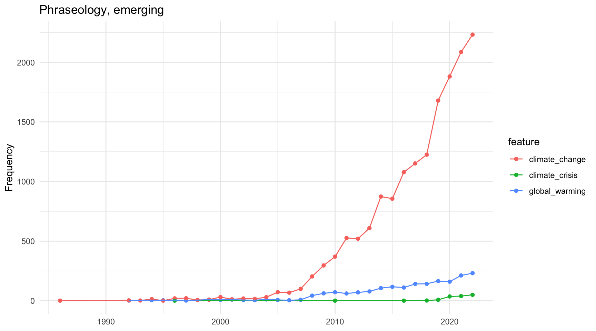
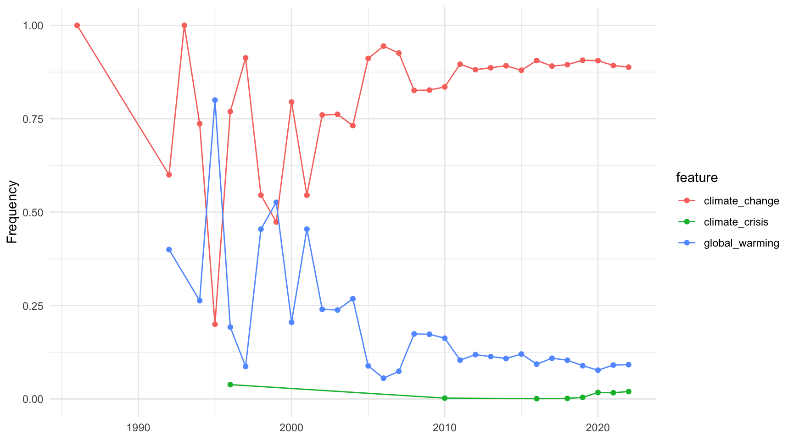
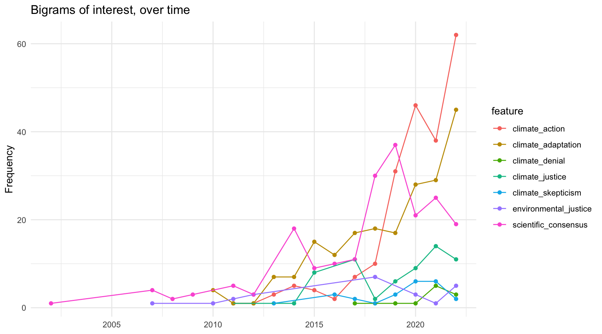
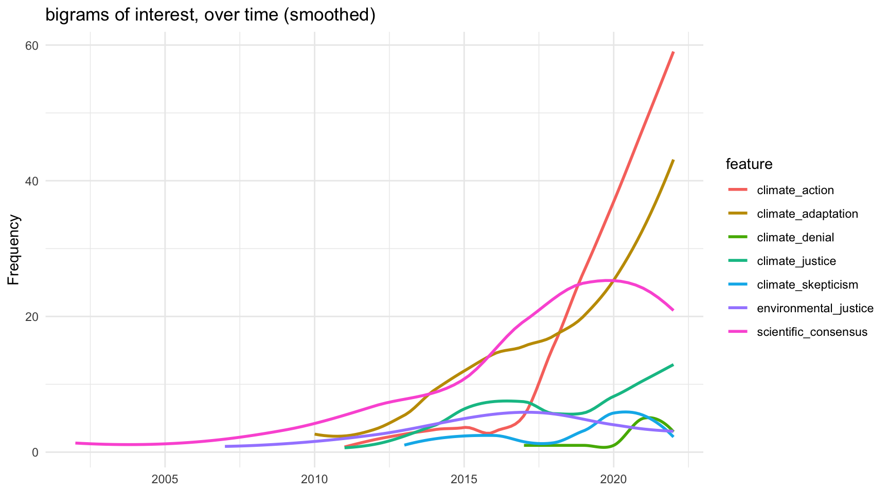
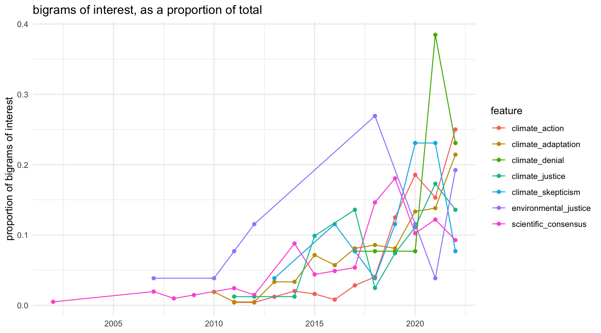
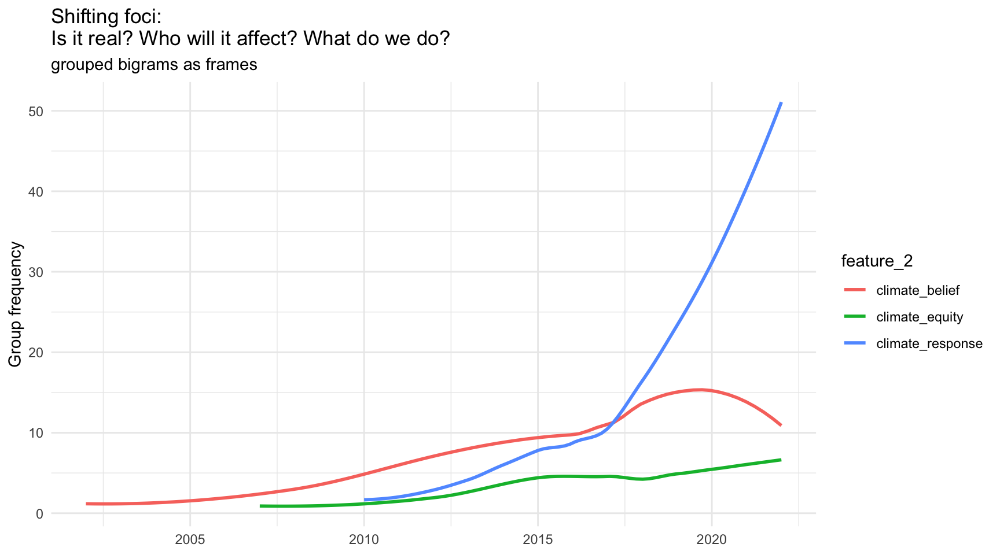
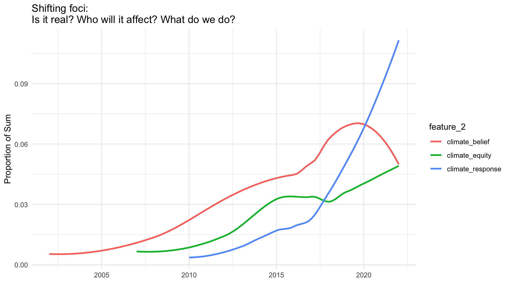

Code
require(quanteda)
options(width = 110)
require(readtext)
library(tidyverse)
require(quanteda.textstats)
require(quanteda.textplots)
fdata_sub <- read_csv("data/12k/fdata_sub.csv")
library(knitr)require(quanteda)
options(width = 110)
require(readtext)
library(tidyverse)
require(quanteda.textstats)
require(quanteda.textplots)
fdata_sub <- read_csv("data/12k/fdata_sub.csv")
library(knitr)Sample of corpus
corp <- corpus(fdata_sub, text_field = "abstract")
glimpse(docvars(corp))Rows: 12,229
Columns: 9
$ article_title <chr> "Critical Approaches to the Climate Crisis", "Addressing the Climate Crisis: An…
$ source_title <chr> "SOCIAL MEDIA + SOCIETY", "AMERICAN PSYCHOLOGIST", "INNOVATION-THE EUROPEAN JOU…
$ journal_abbreviation <chr> "SOC MEDIA SOC", "AM PSYCHOL", "INNOVATION-ABINGDON", "WIRES CLIM CHANGE", "ENV…
$ publication_date <chr> "JUN", "OCT", "JUL 3", "MAR", "JAN 2", NA, "NOV", "MAY", NA, NA, NA, "MAR", NA,…
$ publication_year <dbl> 2023, 2022, 2022, 2022, 2020, 2011, 2021, 2022, 2009, 2009, 2020, 2015, 2022, 2…
$ doi <chr> "10.1177/20563051231177941", "10.1037/amp0001041", "10.1080/13511610.2022.21080…
$ wo_s_categories <chr> "Communication", "Psychology, Multidisciplinary", "Sociology", "Environmental S…
$ ids_number <chr> "I8MI2", "5O9KQ", "4N9QD", "ZP6QN", "KA4VQ", "BA0OR", "WX8NB", "1V6OA", "V17AH"…
$ ut_unique_wos_id <chr> "WOS:001005267200001", "WOS:000844824500001", "WOS:000843135900001", "WOS:00074…Head (first bigrams)
toks <- tokens(corp, remove_punct = TRUE)
toks_nostop <- tokens_select(toks, pattern = stopwords("en"), selection = "remove")
toks_ngram <- tokens_ngrams(toks_nostop, n = 2)
head(toks_ngram[[1]], 5)[1] "essay_turns" "turns_theories" "theories_developed" "developed_critical" "critical_rhetoric" dfm <- dfm(toks_ngram)
topfeatures(dfm) climate_change global_warming degrees_c global_climate n_= rights_reserved
17098 1969 951 712 678 634
results_show greenhouse_gas change_adaptation impacts_climate
610 577 526 521 In abstracts, raw counts by year:
# Get frequency grouped by year
freq_grouped <- textstat_frequency(dfm(toks_ngram),
groups = publication_year)
# Filter the term "climate"
freq_climate_change <- subset(freq_grouped, freq_grouped$feature %in% "climate_change")
freq_global_warming <- subset(freq_grouped, freq_grouped$feature %in% "global_warming")
freq_climate_crisis <- subset(freq_grouped, freq_grouped$feature %in% "climate_crisis")
bound_frames <- rbind(
freq_global_warming,
freq_climate_change,
freq_climate_crisis)
fig01 <- ggplot(bound_frames %>% filter(group != "2023"), aes(x = as.numeric(group), y = frequency, color = feature)) +
geom_point() +
geom_line() +
scale_y_continuous() +
xlab(NULL) +
ylab("Frequency") +
theme(axis.text.x = element_text(angle = 90, hjust = 1)) +
theme_minimal() +
labs(title = "Phraseology, emerging")
fig01
Proportion of phrase: counts divided by sum of target phrases in year
# Get frequency grouped by year
freq_grouped <- textstat_frequency(dfm(toks_ngram),
groups = publication_year)
# Filter the term "climate"
freq_climate_change <- subset(freq_grouped, freq_grouped$feature %in% "climate_change")
freq_global_warming <- subset(freq_grouped, freq_grouped$feature %in% "global_warming")
freq_climate_crisis <- subset(freq_grouped, freq_grouped$feature %in% "climate_crisis")
bound_frames <- rbind(
freq_global_warming,
freq_climate_change,
freq_climate_crisis) %>%
group_by(group) %>%
mutate(prop = frequency/sum(frequency)) %>%
ungroup()
fig02 <- ggplot(bound_frames %>% filter(group != "2023") , aes(x = as.numeric(group), y = prop, color = feature)) +
geom_point() +
geom_line() +
scale_y_continuous() +
xlab(NULL) +
ylab("Frequency") +
theme(axis.text.x = element_text(angle = 90, hjust = 1)) +
theme_minimal()
fig02
Key phrases, grouped loosely:
Equity and justice
Consensus and denial
freq_climate_action <- subset(freq_grouped, freq_grouped$feature %in% "climate_action")
# equity and justice frame
freq_climate_justice <- subset(freq_grouped, freq_grouped$feature %in% "climate_justice")
freq_enviro_justice <- subset(freq_grouped, freq_grouped$feature %in% "environmental_justice")
freq_env_equity <- subset(freq_grouped, freq_grouped$feature %in% "environmental_equity")
freq_clim_equity <- subset(freq_grouped, freq_grouped$feature %in% "climate_equity")
freq_climate_adaptation <- subset(freq_grouped, freq_grouped$feature %in% "climate_adaptation")
# consensus, denial
freq_sci_consensus <- subset(freq_grouped, freq_grouped$feature %in% "scientific_consensus")
freq_climate_denial <- subset(freq_grouped, freq_grouped$feature %in% "climate_denial")
freq_climate_skepticism <- subset(freq_grouped, freq_grouped$feature %in% "climate_skepticism")
# bind above
bound_something <- rbind(
freq_climate_denial,
freq_climate_skepticism,
freq_climate_action,
freq_climate_justice,
freq_enviro_justice,
freq_climate_adaptation,
freq_sci_consensus,
freq_env_equity,
freq_clim_equity
)
fig03 <- ggplot(bound_something %>% filter(group != "2023"), aes(x = as.numeric(group), y = frequency, color = feature)) +
geom_point() +
geom_line() +
scale_y_continuous() +
xlab(NULL) +
ylab("Frequency") +
theme(axis.text.x = element_text(angle = 90, hjust = 1)) +
theme_minimal() +
labs(title = "Bigrams of interest, over time")
fig03
fig04 <- ggplot(bound_something %>% filter(group != "2023"), aes(x = as.numeric(group), y = frequency, color = feature)) +
geom_smooth(se=F) +
scale_y_continuous() +
xlab(NULL) +
ylab("Frequency") +
theme(axis.text.x = element_text(angle = 90, hjust = 1)) +
theme_minimal() +
labs(title = "bigrams of interest, over time (smoothed)")
fig04
As a proportion…
bound_st_prop <- bound_something %>%
group_by(feature) %>%
mutate(prop2 = frequency/sum(frequency)) %>%
ungroup()
fig05 <- ggplot(bound_st_prop %>% filter(group != "2023"), aes(x = as.numeric(group), y = prop2, color = feature)) +
geom_point() +
geom_line() +
scale_y_continuous() +
xlab(NULL) +
ylab("proportion of bigrams of interest") +
theme(axis.text.x = element_text(angle = 90, hjust = 1)) +
theme_minimal() +
labs(title = "bigrams of interest, as a proportion of total")
fig05
Grouped
group_frame <- bound_something %>%
mutate(feature_2 = ifelse(feature %in% c("climate_action", "climate_adaptation"), "climate_response",
ifelse(feature %in% c("climate_skeptism", "climate_denial", "scientific_consensus"), "climate_belief",
"climate_equity")))
fig06 <- ggplot(group_frame %>% filter(group != "2023"), aes(x = as.numeric(group), y = frequency, color = feature_2)) +
geom_smooth(se=F) +
scale_y_continuous() +
xlab(NULL) +
ylab("Group frequency") +
theme(axis.text.x = element_text(angle = 90, hjust = 1)) +
theme_minimal() +
labs(title = "Shifting foci: \nIs it real? Who will it affect? What do we do? ",
subtitle = "grouped bigrams as frames")
fig06
group_frame_prop <- bound_st_prop %>%
mutate(feature_2 = ifelse(feature %in% c("climate_action", "climate_adaptation"), "climate_response",
ifelse(feature %in% c("climate_skeptism", "climate_denial", "scientific_consensus"), "climate_belief",
"climate_equity")))%>%
group_by(feature_2) %>%
mutate(prop2 = frequency/sum(frequency)) %>%
ungroup()
fig07 <- ggplot(group_frame_prop %>% filter(group != "2023"), aes(x = as.numeric(group), y = prop2, color = feature_2)) +
geom_smooth(se=F) +
scale_y_continuous() +
xlab(NULL) +
ylab("Proportion of Sum") +
theme(axis.text.x = element_text(angle = 90, hjust = 1)) +
ggtitle("Shifting foci: \nIs it real? Who will it affect? What do we do? ") +
theme_minimal()
fig07